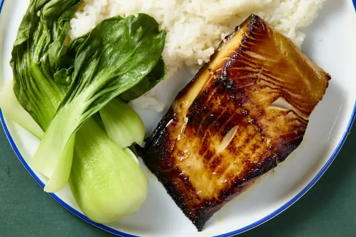

Miso Black Cod
- Total time10 to 15 mins
- Serves4
- Ingredients7
- Steps6

Ingredients
- 1/4 cup sake
- 1/4 cup mirin
- 1/4 cup white miso paste
- 3 tablespoons granulated sugar
- 4 (4 to 6-ounce) black cod or sablefish fillets, preferably center cut
- Kosher salt
- Cooking spray or 2 tablespoons vegetable or canola oil
Directions
- Two to 3 days beforehand, make the miso marinade and marinate the fish. Bring 1/4 cup sake and 1/4 cup mirin to a boil in a small saucepan over high heat. Boil for 20 seconds more to evaporate the alcohol. Turn the heat down to low, add 1/4 cup white miso paste and 3 tablespoons granulated sugar, and whisk until the miso and sugar are dissolved. Remove from the heat and let cool to room temperature.
- Pat 4 (4 to 6-ounce) black cod fillets dry with paper towels. Place in a plastic zip top bag or container wide enought to hold the fish in a single snug layer. Add the marinade and turn the fish to coat. Cover or seal the bag and refrigerate for 2 to 3 days.
- When ready to cook, heat the oven based on the desired cooking option below. While the oven is heating, remove the fish from the marinade and gently brush off the marinade with your hands, leaving a thin film of marinade on the fish. Do not rinse or wipe off the marinade with paper towels. Lightly season the fish with kosher salt.
- Cooking Option #1: Broiling. Arrange a rack 6 to 8 inches from the broiler element, then heat the oven to broil. Cover a wire rack with aluminum foil, then fit onto a baking sheet. Coat the foil with cooking spray. Place the fish skin-side down (or smoother side down if skinless) in a single layer on the foil. Broil, checking every few minutes and rotating the baking sheet as needed, until the fish starts to flake and the top is dark golden brown and charred in spots (it's okay if the marinade that drips onto the foil burns), 8 to 12 minutes.
- Cooking Option #2: Stovetop Searing and Baking. Arrange a rack in the middle of the oven and heat the oven to 400°F. Heat 2 tablespoons vegetable or canola oil in a 12-inch oven-proof skillet, preferably cast iron, over medium-high heat until just starting to smoke. Place the fish skin-side-up (or smoother side up if skinless) in the pan in a single layer. Cook until the bottom of the fish browns and blackens in spots, 2 to 3 minutes. Slide a thin metal spatula under each piece of fish and carefully flip. Continue cooking until the second side is browned, 2 to 3 minutes. Transfer the skillet to the oven and bake until the fish is opaque and flakes easily, 5 to 10 minutes more.
- After both cooking methods, use a thin metal spatula to transfer the fish to plates. Check for and remove any pin bones from the fish before serving.
Recipe credit: thekitchn.com